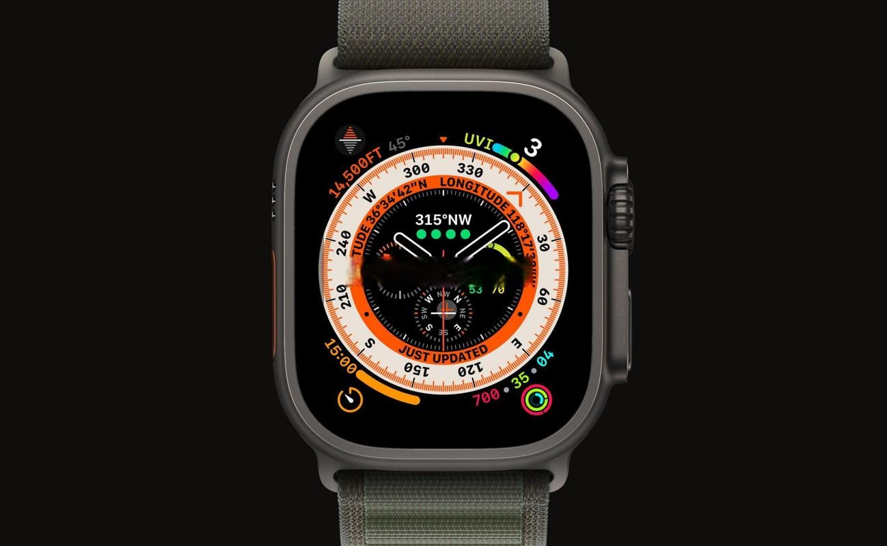

苹果 Apple Watch Ultra

钛金属巨兽，为越野、潜水与极限户外而生的专业腕表。
客观评测
Apple Watch Ultra 以 49mm 钛金属表壳包裹 1.92 英寸 2000 尼特 OLED，是当时最亮、最坚固的 Apple Watch。双频 GPS 让城市高楼与山林中的轨迹漂移明显减少，深度计配合 Oceanic+ 可作休闲潜水电脑，高 g 值加速度计支持 256g 撞击与车祸检测。实测续航 36 小时达标，低功耗模式延至 60 小时，86 分贝警笛与三麦克风保障恶劣环境求救。
主观点评
第一次戴上它的感觉是结实与笃定：橙色操作按钮一按开始训练，旋入式表冠带着机械腕表般的阻尼感。它当然过剩——多数人用不到潜水电脑和警笛——但这种为极端场景预留的余量，反而让人在日常跑步、徒步时格外安心。它把智能手表从精致的电子配饰推向可以信赖的专业装备，也是苹果对硬核户外用户的一次正面回应。
优点与不足
- 2000 尼特高亮屏与钛金属表壳，户外强光和磕碰都不怕
- 双频 GPS 加回溯功能，越野与野外探险安全感十足
- 36 小时续航加低功耗模式，跨昼夜耐力赛也不慌
- 49mm 表壳偏大，细手腕佩戴观感突兀
- 6299 元的售价远高于普通智能手表
- 机身较重，日常睡眠佩戴舒适度一般
参数规格
| 屏幕 | 1.92 英寸 LTPO OLED 平面屏，最高 2000 尼特 |
|---|---|
| 分辨率 | 410×502 像素 |
| 处理器 | Apple S8 SiP 双核 64 位，W3 无线芯片 |
| 传感器 | 血氧、心电、体温感应、深度计、水温传感器、高 g 值加速度计、陀螺仪 |
| 定位 | 双频 GPS（L1 + L5），精准定位与航点回溯 |
| 防水 | 100 米防水，EN13319 潜水认证，工作水温 0–35℃ |
| 电池 | 36 小时典型续航，低功耗模式最长 60 小时 |
| 系统 | watchOS 9，可升级至后续版本 |
| 兼容性 | 需搭配 iPhone 8 及以上，iOS 16 起 |
| 重量 | 约 61.3g（钛金属表壳，不含表带） |
| 特色 | 可自定义操作按钮、双扬声器、三麦克风、86 分贝警笛 |